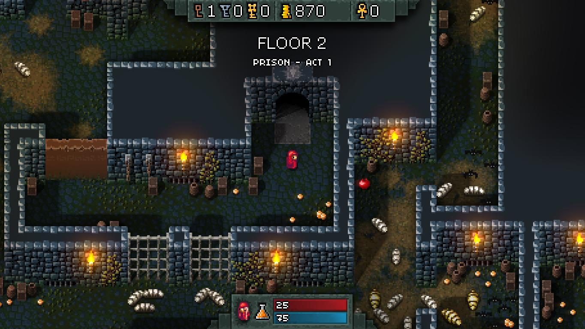

This site was created for a web development class at Washington State University. The goal of the project is to create an in browser rogue like dungeon crawler for desktop browsers. This project is currently being developed by Luke Darrow and David Hoekman.
Link to GitHub repo: github
Core Gameplay:
We have a lot of ideas for what we will include in our game. The major insperation was to create something similar to the game Hammerwatch, with additional features. We plan to have a top down view much like Hammerwatch as pictured below.
The game will run in real time with free movement, and combat. The dungeons themselves will be generated randomly. We plan on including are having XP that will award chooseable stat upgrades. This will allow for a feeling of progression throughout the game, and will also allow us to scale enemies as the game goes along. The game would be a roguelike of sorts with a two dimensional world and combat similar to Hammerwatch. It will be like a roguelike with stats and experience that don’t carry over into new dungeon runs as each run is unique.
There will be at least three different classes of playable characters. A warrior that has a bit more health, average damage, and a sweeping sword attack. A rogue that has lower than average health, above average damage, and a poking attack. Lastly a wizard with average health, and average damage, with a ranged attack.
We also have some stretch goals that we want to get to do, but may not be able to. We have thought of including item pick ups that could affect your stats, such as increasing movement speed, or even change the way your character attacks, such as making your attacks bigger. Another stretch goal we thought of is creating a seed input so you can replay a dungeon if you want to, or keep the seed for an interesting dungeon you want to show others. One last stretch goal would to make the game co-op, to allow multiple people to team up in the dungeons